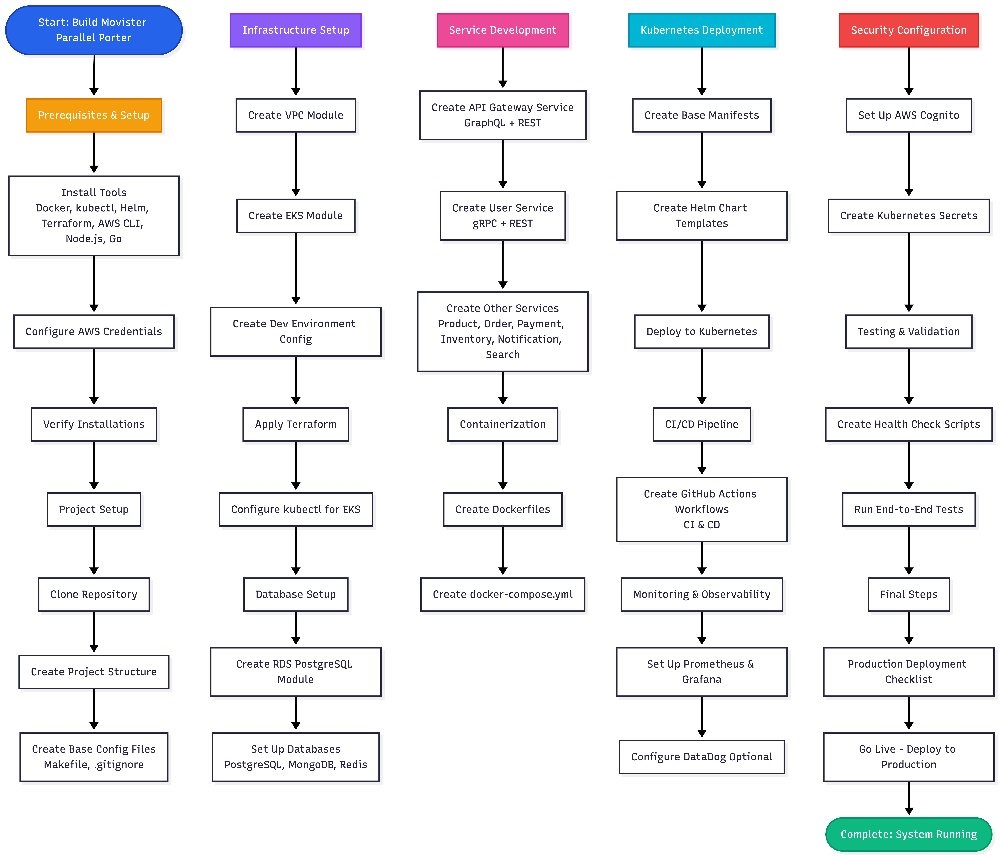

🚀 Movister Parallel Porter
Build Guide Flowchart & Mind Map
Interactive Flowchart

⚡ Quick Reference: Critical Path
Install Tools → Configure AWS → Create Infrastructure →
Set Up Databases → Build Services → Containerize →
Deploy to K8s → Set Up CI/CD → Configure Monitoring →
Secure → Test → Deploy to Production
📋 Phase 1: Prerequisites
1
Install Required Tools
- Docker & Docker Compose
- kubectl
- Helm
- Terraform
- AWS CLI
- Node.js
- Go
2
Configure AWS Credentials
AWS Access Key ID, Secret Access Key, and default region configuration
3
Verify Installations
Confirm all tools are properly installed and accessible
🏗️ Phase 2: Project Setup
4
Clone and Initialize Repository
Clone repository and create complete directory structure for all services and infrastructure
5
Create Base Configuration Files
Makefile for common commands and .gitignore for version control
☁️ Phase 3: Infrastructure Setup
6
Create Terraform VPC Module
VPC, subnets (public/private), internet gateway, and route tables
7
Create EKS Module
EKS cluster, node groups, and IAM roles for Kubernetes
8
Create Dev Environment Config
Terraform backend configuration and provider setup
9
Apply Terraform & Configure kubectl
Initialize, plan, and apply infrastructure. Configure kubectl for EKS access
💾 Phase 4: Database Setup
10
Create RDS PostgreSQL Module
DB subnet group, security groups, and RDS instance configuration
11
Set Up All Databases
PostgreSQL (RDS), MongoDB, Redis, DynamoDB, and Elasticsearch
🔧 Phase 5: Service Development
12
Create API Gateway Service
GraphQL (Apollo Server) + REST endpoints using TypeScript/Node.js
13
Create User Service
gRPC + REST service in Go with PostgreSQL integration
14
Create Remaining Services
Product, Order, Payment, Inventory, Notification, and Search services
🐳 Phase 6: Containerization
15
Create Docker Compose
Local development environment with all services, databases, and message brokers
⚙️ Phase 7: Kubernetes Deployment
16
Create K8s Base Manifests
Deployments, services, and namespaces for all microservices
17
Create Helm Chart Templates
Reusable Helm charts for services and infrastructure components
18
Deploy to Kubernetes
Apply manifests and verify all services are running correctly
🔄 Phase 8: CI/CD Pipeline
19
Create GitHub Actions Workflows
CI pipeline for testing and building, CD pipeline for automated deployment
📊 Phase 9: Monitoring & Observability
20
Set Up Prometheus & Grafana
Install via Helm and configure monitoring dashboards
21
Configure DataDog (Optional)
Install DataDog agent and configure API keys for APM
🔒 Phase 10: Security Configuration
22
Set Up AWS Cognito
Create user pool and user pool client for authentication
23
Create Kubernetes Secrets
Database credentials and API keys stored securely in K8s
✅ Phase 11: Testing & Validation
24
Create Health Check Scripts
Automated health checks for all services
25
Run End-to-End Tests
API tests, gRPC tests, and database connectivity verification
🚀 Phase 12: Production Deployment
26
Production Deployment Checklist
Verify all tests passing, infrastructure ready, monitoring configured, security hardened
27
Go Live
Deploy to production, monitor deployment, and verify all services
⏱️ Time Estimates
Prerequisites
30-60 minutes
Project Setup
15-30 minutes
Infrastructure
2-4 hours
Database Setup
1-2 hours
Service Development
8-16 hours/service
Containerization
1-2 hours
Kubernetes
2-4 hours
CI/CD Setup
2-3 hours
Monitoring
1-2 hours
Security
2-3 hours
Testing
2-4 hours
Production
1-2 hours
Total Estimated Time: 30-50 hours (depending on experience level)